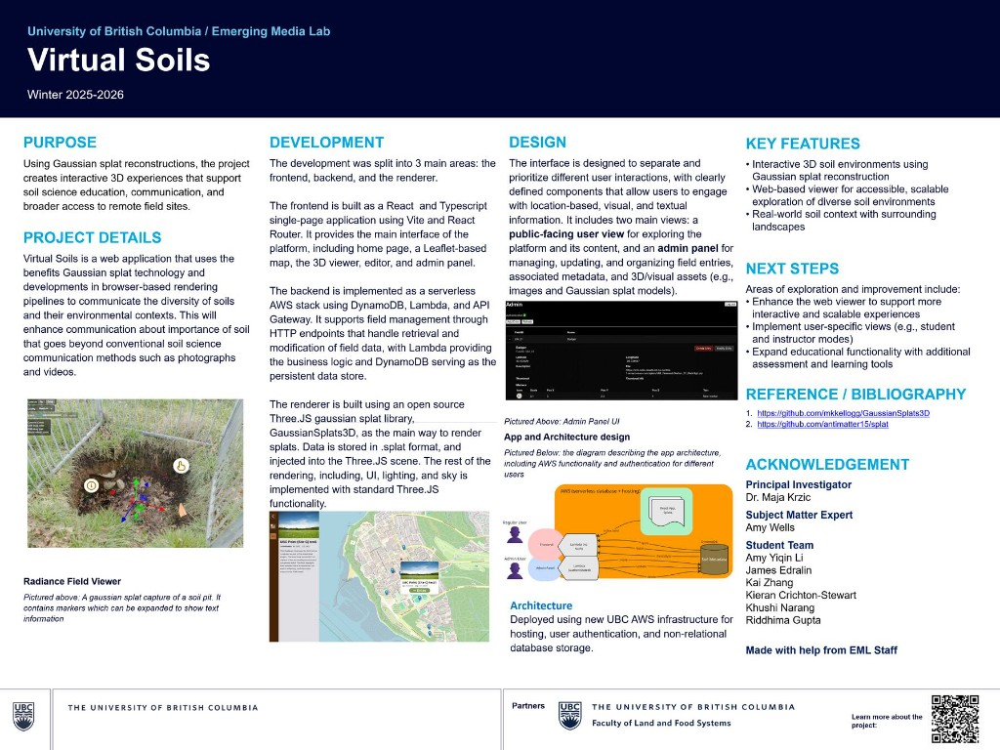

A Gaussian Splat scan can hold an enormous amount of visual information. Without clear controls and orientation, rotating, zooming, and moving through 3D soil quickly becomes hard to understand—especially for people who are not 3D or visualization experts.
SolutionAn interface that gets out of the way
I designed around the user's mental model, not the technical capabilities of the viewer. The work was to figure out what people needed to see, what they needed to understand, and how the interface could support exploration without competing with the data.
ResultA more approachable viewer
The live web viewer at virtualsoils.ca lets researchers and students move through high-resolution soil scans with clearer navigation, organized controls, and an interaction system shaped by testing.
Impact
1
Designer
Sole UI/UX between researchers and developers
Live
Web viewer
Exploring Gaussian Splat soil scans at virtualsoils.ca
UBC
Soil Science
Built with Emerging Media Lab and the Department of Soil Science
Context
How do you make complex 3D scientific data feel approachable?
Soil Science Viewer is a web-based visualization tool for exploring high-resolution soil scans using Gaussian Splatting. As the sole UI/UX designer, I worked between researchers and developers to turn a technically complex dataset into an interface that was easier to navigate, understand, and explore.
The challenge wasn't simply to make the viewer look clean.
It was to figure out what users needed to see, what they needed to understand, and how the interface could get out of their way while they explored the data.
Problem
Starting with a complex dataset
The original challenge came from the nature of the data itself.
A Gaussian Splat scan can contain an enormous amount of visual information. Users can rotate, zoom, and move through a three-dimensional representation of soil, but without clear controls and orientation, the viewer can quickly become difficult to understand.
I began by breaking the experience down into the fundamental questions a user might have:
Where am I?
What am I looking at?
How do I move through it?
What can I interact with?
How do I get back if I lose my position?
These questions became the foundation for the navigation and interaction system.
Goals + North Star
Designing for people who aren't 3D experts
Rather than designing around the technical capabilities of the visualization, I focused on designing around the user's mental model.
The goal was not to hide the complexity of the data, but to make that complexity easier to approach.
Organize. Could controls sit around the actions people needed most?
Communicate. Was navigation understandable without becoming another layer of noise?
Focus. Did the 3D view stay the main attraction?
Discover. Were important actions still easy to find?
Process + Key Insights
Design → build → test → identify friction → revise
Designing the interface was only one part of the problem.
Because the viewer was being developed collaboratively, I worked directly with developers to understand what was technically possible and how the design would translate into the actual web experience.
I created and iterated on prototypes in Figma, discussed interaction behaviour with the development team, and refined designs as implementation revealed new constraints.
Instead of treating the handoff as the end of the design process, I stayed involved throughout implementation.
As the viewer developed, I used feedback and observation to identify where users were having difficulty. I looked at more than whether someone could successfully operate the viewer. I paid attention to moments of hesitation, confusion, and unnecessary effort.
01
Discovery is the first barrier
Where people looked first—and which controls they missed—mattered more than whether a feature technically existed.
02
Navigation has to feel predictable
Moving through a splat is easy to get lost in. People needed to trust how orbit, fly, and reset would behave.
03
The interface must explain the 3D view
Users had to understand the relationship between controls and the environment, then find their way back if they lost their position.
Small changes to hierarchy, labeling, control placement, and navigation could make a significant difference in how confidently someone explored the visualization.
Design 1/3
Designing the interface around the data
One of the most important design decisions was balancing interface clarity with visual immersion.
The 3D soil scan is the reason users are on the page in the first place. Too much UI would compete with the visualization; too little would leave users without enough guidance.
I therefore treated the interface as a supporting layer rather than the main attraction.
Controls were organized around the actions users needed most, while secondary information remained available without constantly competing for attention.
This helped create a viewer where the interface supports exploration rather than becoming another problem users have to solve.
Design 2/3
From prototype to implementation
I explored different ways of organizing controls, communicating navigation, and presenting information without overwhelming the 3D view.
Through prototyping and iteration, I simplified the interface so that the visualization remained the focus while important actions were still easy to discover.
Implementation kept revealing new constraints. That made the loop essential: design, build, test, identify friction, revise, and build again.
Design 3/3
Collaborating across design and research
Working as the sole designer also meant taking responsibility for translating between different perspectives.
Researchers brought questions about how the soil data should be presented and explored. Developers understood the underlying visualization technology and implementation constraints. My role was to connect these requirements to the experience of the person actually using the viewer.
Sometimes that meant advocating for a usability improvement. Other times, it meant adapting a design to a technical limitation or finding a simpler solution that achieved the same goal.
The process taught me that good UX in research environments isn't about designing in isolation.
It is about asking the right questions, communicating clearly, and finding a solution that works for both the people using the tool and the people building it.
The Result
A viewer that makes the data easier to approach
The final result is a web-based viewer that allows users to explore Gaussian Splat soil scans through a more accessible interaction system.
My work established:
Navigation & interaction — clearer ways to move through and interact with 3D soil scans
Information architecture — organized controls and information around user needs
Usability — identified and addressed points of confusion and interaction friction
Accessibility — considered the needs of non-technical users interacting with scientific data
Design systems — developed consistent interface patterns and prototypes in Figma
Implementation collaboration — worked directly with developers throughout development

Project poster — Winter 2025–2026. Purpose, stack, design approach, architecture, and the EML student team.
Reflections
Build a bridge, not just a visualization
The project changed how I think about scientific visualization.
The hardest part isn't necessarily visualizing the data.
It is building a bridge between the complexity of the data and the simplicity users need in order to understand it.